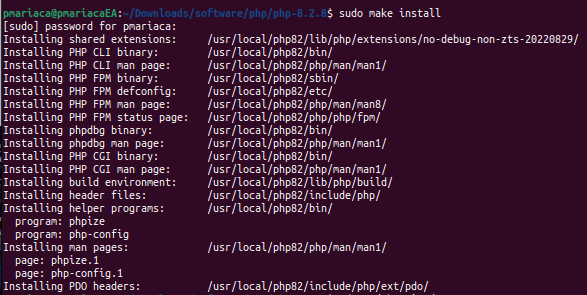
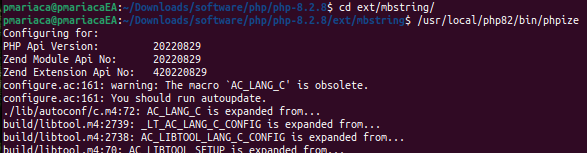

Compilar php desde la fuente con Ubuntu 18, es tardadon por las dependencias, pero sencillo, recomiendo leer el contenido, es interesante.
Contenido
Preparando entorno:
sudo apt-get update
sudo apt-get install build-essential autoconf libtool bison re2c pkg-config
Comenzamos descargando el fuente de php, yo descargé php-8.2.10.tar.gz, siguiente paso es descomprimir con "tar -xvzf php-8.2.10.tar.gz.tar.gz", y entrar a la carpeta
Crear el archivo config.nice donde se incluyen las librerias que se requieren, por ejemplo:
#! /bin/sh
#
# Created by configure
'./configure' \
'--prefix=/usr/local/php82' \
'--enable-cli' \
'--enable-fpm' \
'--enable-intl' \
'--enable-mbstring' \
'--enable-opcache' \
'--enable-sockets' \
'--enable-soap' \
'--with-curl' \
'--with-freetype' \
'--with-fpm-user=www-data' \
'--with-fpm-group=www-data' \
'--with-jpeg' \
'--with-mysql-sock' \
'--with-mysqli' \
'--with-openssl' \
'--with-pdo-mysql' \
'--with-pgsql' \
'--with-xsl' \
'--with-zlib' \
"$@"
y se ejecuta
./congigure.nice
Lo más probable es que se tenga que hacer varias veces, porque faltarán algunas dependencias, ya que por fin quede seguimos con:
make
make install
Listo, queda instalado en donde indicamos en "'--prefix=/usr/local/php82' \"
 upListo, con esto queda, algunas extensiones están en la carpeta "ext"
pmariaca@pmariacaEA:~/Downloads/software/php/php-8.2.8/ext/mbstring
usr/local/php82/bin/phpize
./configure --with-php-config=/usr/local/php82/bin/php-config
make
sudo make install
La extensión que se usa regularmente pero que no tenemos es memcached, se tiene que bajar y hay que verificar que sea la adecuada para la versión que tenemos, esto en pecl , y el procedimiento para instalar es el mismo
cd php-memcached-master/
usr/local/php82/bin/phpize
./configure --with-php-config=/usr/local/php82/bin/php-config
make
sudo make install
Eso es todo en ubuntu 18. Pero al compilar en ubuntu 22, al correr el phpize, hay un problema:

probe también con la versión 7.4 y lo mismo.
No tuve problemas con el php 8.3, pero necesitaba también las otras versiones. Al parecer el problema era que la version del autoconfig no coincie, pero en fin, como ya se pueden instalar varias versiones de php, directo con apt-get, decidi por lo sano y listo, lo tengo